Anaconda 下載與安裝流程
Anaconda 是最多人用來使用python的介面，其有系統地整合套件及環境，使用上相當便利。
以下示範Anaconda windows版本的下載安裝流程macOS系統(Graphical Installer)的基本上大同小異
- 至官網下載python版本最高的Anaconda，依照電腦選擇64-bit/32-bit。
- 點開執行檔開始安裝
Anaconda:"建議關掉其他所有應用程式在開始setup"，怕出事可以照做，不過基本上不會影響；按下"Next"
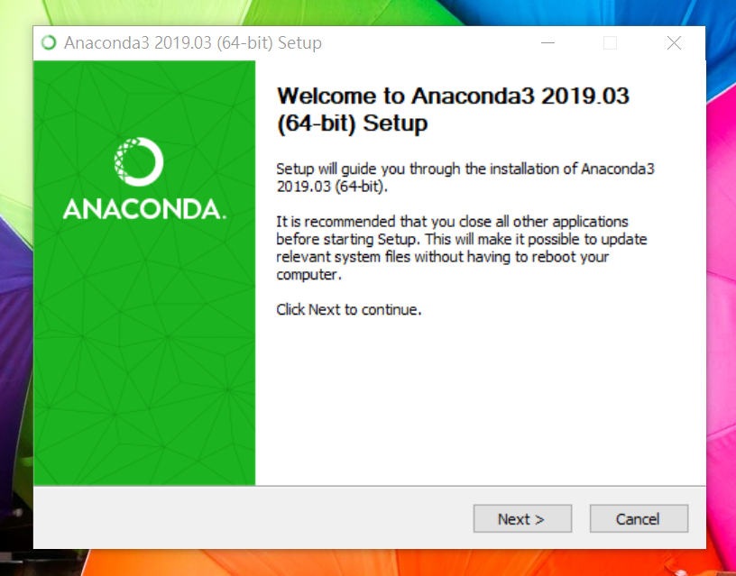是否許可此安裝對電腦的影響；按下"I Agree"
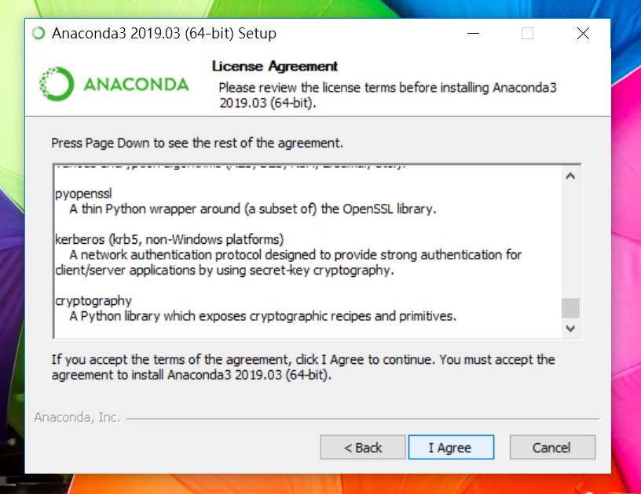當下使用者安裝還是對電腦中所有使用者安裝；自行抉擇
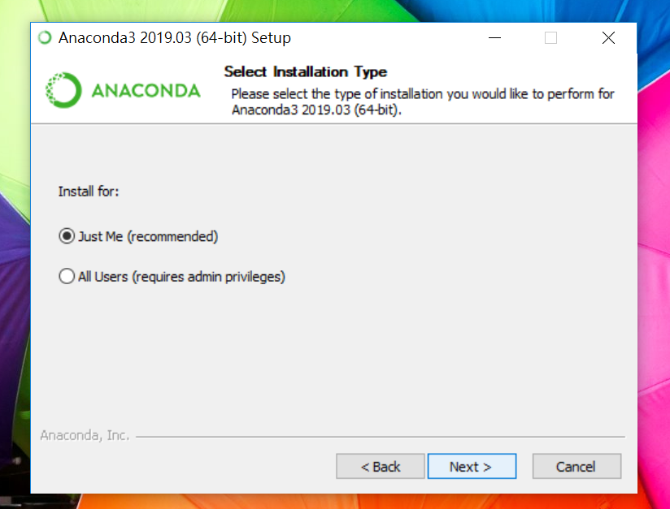要裝在哪個資料夾，他會預設幫你創一個"Anaconda" 資料夾；按下"Next"
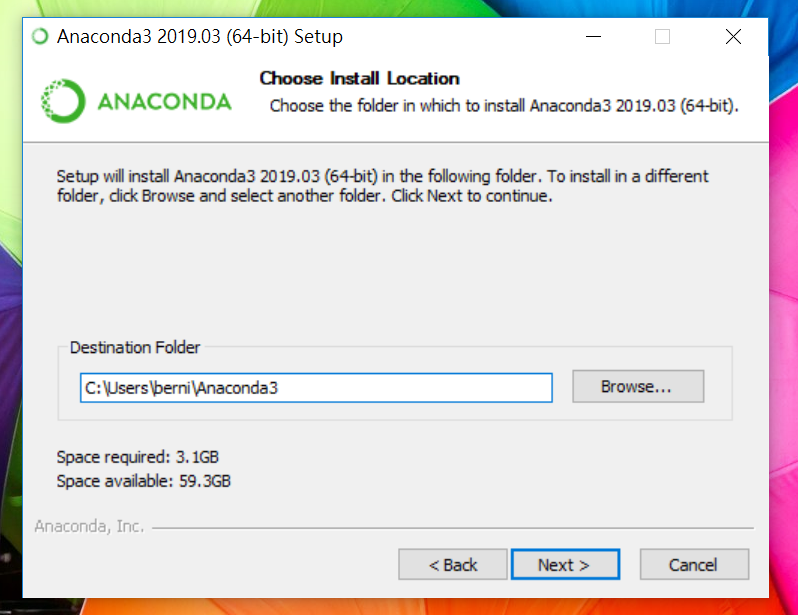進階選項，上面問是否要在一開機就先跑Anaconda，Anaconda:"建議不要"。
(開機就先跑的話會犧牲到開機時間，但可以讓我們之後使用Anaconda的時候跑得比較快；不過畢竟我們開電腦不是每次都要用Anaconda，所以不要選會比較好)
下面問是否以Anaconda作為默認開啟一些Python相關東東的系統，建議選取；按下"Install"開始安裝
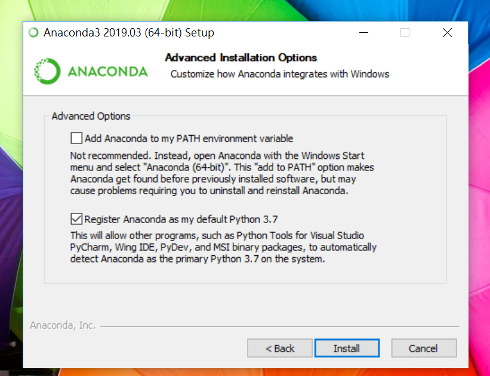開始安裝，跑完按"Next"
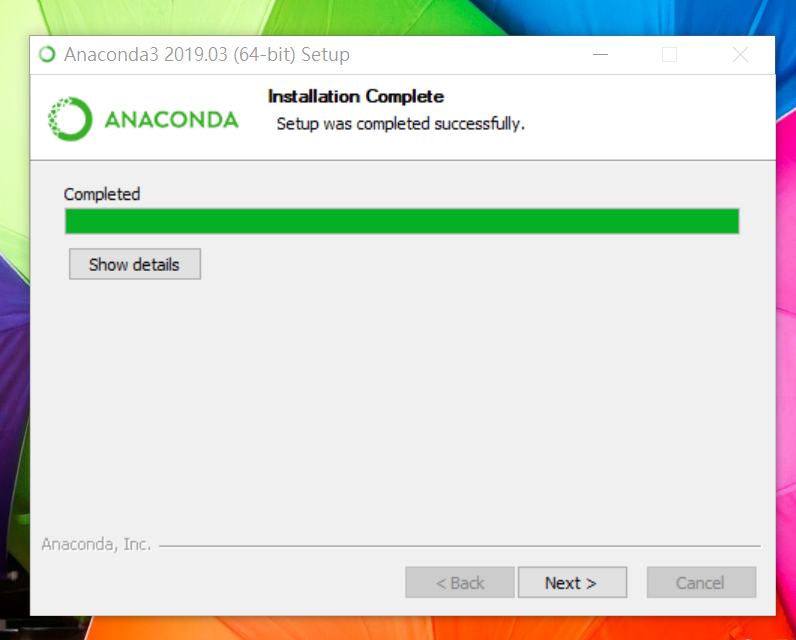Anaconda有跟JetBrains合作；完全不重要，按下"Next"
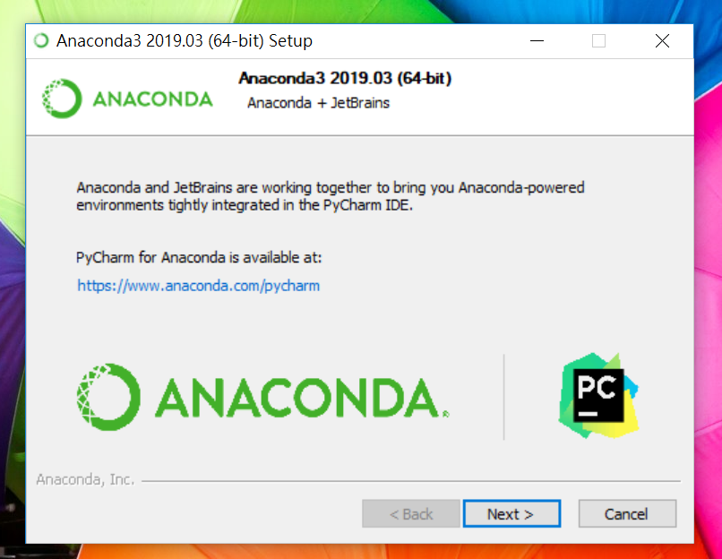跟Anaconda Cloud有關的；不要管它，都不選，按下"Finsh"，完成安裝
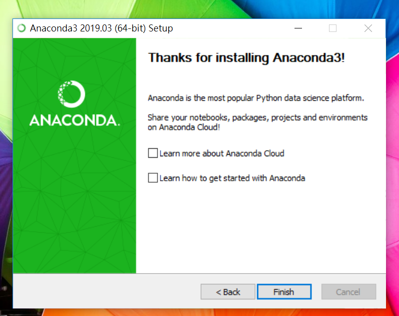
Anaconda Navigator
Anaconda Navigator 是一個簡單易懂的圖像操作界面，幫你整理好開發python程式要用到的很多東東。
於是我們要先打開它。
安裝完後，我們可以利用search的功能找到Anaconda Navigator。
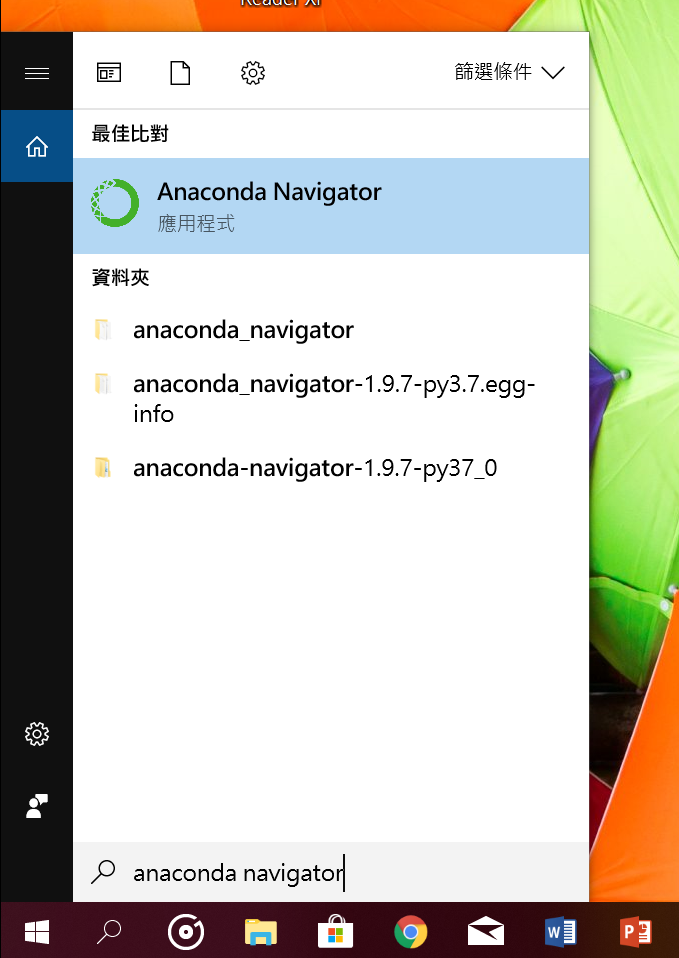要跑一陣子(有點久)
問你要不要幫助他們進步，隨便；按下"Ok, and don't show again"
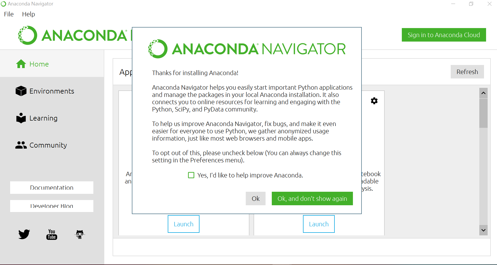
Spyder
Spyder 是用來編輯Python程式的編輯器。對python的初學者來說，其實 Navigator 裡的很多功能還不會用到，
只會用到Spyder，所以建議把Spyder釘選到工作列或是建一個shortcut在桌面。
這邊講一下Spyder可以在Navigator中 Home 選單裡找到，按下"Launch"即可開啟。
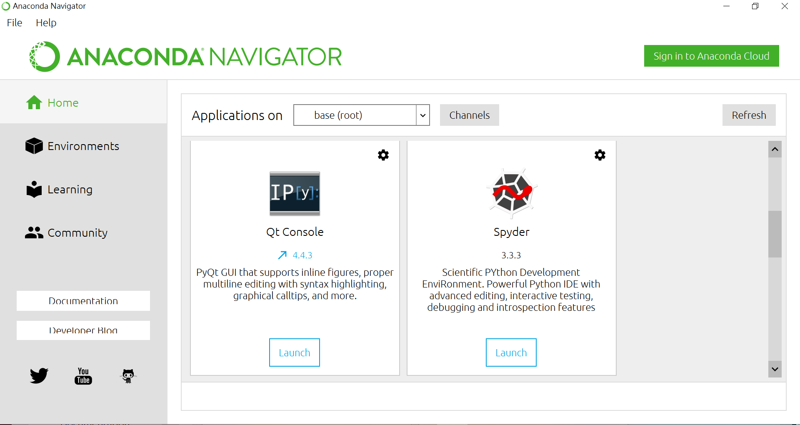
!!若無法從Anaconda開啟，請直接以search，找到Spyder並開啟
連結:Spyder介面介紹